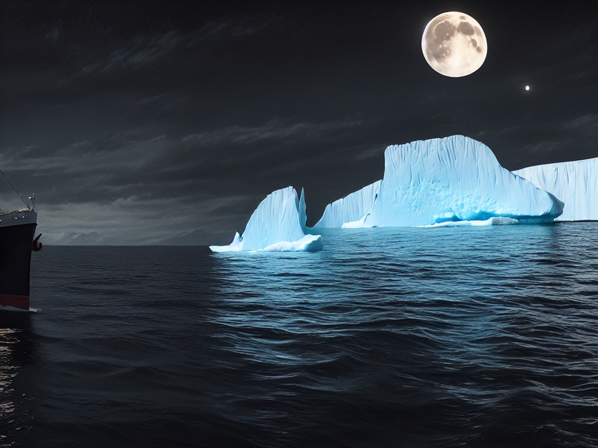
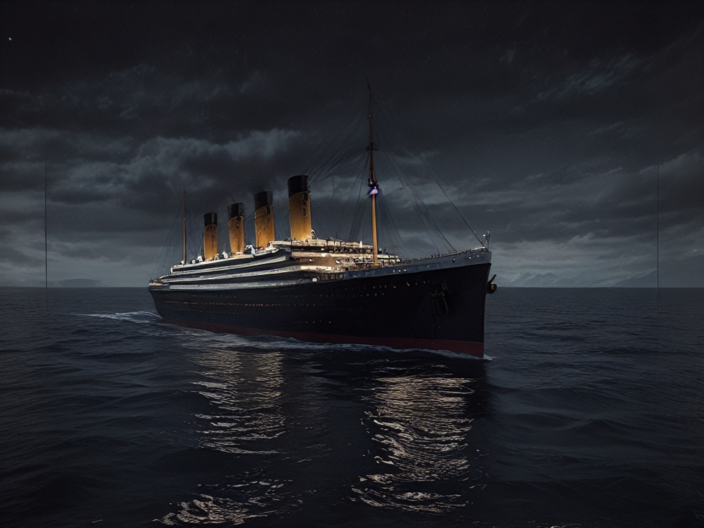

نکات استفاده از ویژگی Outpaint
ویژگی Outpaint در AiCasso به شما این امکان را میدهد که با افزودن عناصر جدید در اطراف یک تصویر یا گسترش آنچه که در حال حاضر وجود دارد، تصویر را گسترش دهید. فقط توصیف کنید که چه چیزی میخواهید و AiCasso بقیه کار را انجام میدهد.
چگونه کار میکند:
تغییر خود را توصیف کنید:
فقط آنچه را که میخواهید اضافه یا گسترش دهید، تایپ کنید و AiCasso آن تغییرات را اعمال خواهد کرد. میتوانید جهتهایی مانند چپ، راست، بالا یا پایین و حتی جزئیاتی مانند زوم کردن یا پان کردن را مشخص کنید.
ویرایشهای نمونه:
نمونه ۱: "یک کوه یخ به سمت راست اضافه کنید با استفاده از عامل ترجمه ۰.۴."

نتیجه: AiCasso تصویر را به سمت راست گسترش میدهد و یک کوه یخ اضافه میکند و آن را با مناظر موجود سازگار نگه میدارد.
نمونه ۲: "زوم کنید، ثبات دریا تاریک در شب را حفظ کنید."

نتیجه: تصویر زوم میکند و بخش بیشتری از دریا تاریک را نشان میدهد، در حالی که جو صحنه شب را حفظ میکند.
گزینههای اضافی
در اینجا برخی از تنظیمات اختیاری وجود دارد که میتوانید برای تنظیم دقیق ویرایشهای خود استفاده کنید:
- پیشنهاد منفی: اگر چیزی خاص وجود دارد که نمیخواهید در تصویر باشد، میتوانید اینجا به AiCasso بگویید. به عنوان مثال، ممکن است بخواهید از افزودن رنگها یا اشیاء خاصی خودداری کنید.
- نوع حرکت: این تعیین میکند که تصویر در کدام جهت گسترش مییابد. میتوانید از چپ، راست، بالا، پایین یا به عقب (که زوم میکند) انتخاب کنید. به عنوان مثال، برای پان کردن به سمت راست، 'راست' را انتخاب میکنید.
- عامل ترجمه: این کنترل میکند که تصویر با هر مرحله چقدر حرکت میکند. یک مقدار بالاتر تصویر را بیشتر حرکت میدهد و محتوای جدید بیشتری را نشان میدهد. مقدار پیشفرض ۰.۰۵ است، اما میتوانید آن را از ۰ تا ۱ تنظیم کنید.
- عرض/ارتفاع ترجمه در هر مرحله: اینها کنترل میکنند که تصویر با هر مرحله چقدر به صورت افقی (عرض) یا عمودی (ارتفاع) حرکت میکند. مقدار پیشفرض ۳۲ پیکسل در هر مرحله است، اما میتوانید این را بر اساس میزان جابجایی که میخواهید تنظیم کنید.
- تعداد مراحل استنتاج یا کاهش نویز: این تعیین میکند که AiCasso چند تغییر برای به دست آوردن تصویر نهایی انجام میدهد. مراحل بیشتر منجر به نتیجهای نرمتر میشود، با پیشفرض ۲۰ مرحله، اما میتوانید تا ۵۰ مرحله بروید.
- تعداد مراحل درونیابی: این کنترل میکند که انتقال بین دو جهت در یک گسترش واحد چقدر نرم انجام میشود. مقدار پیشفرض ۶۰ است، اما میتوانید آن را تا ۱۲۰ برای انتقالهای نرمتر افزایش دهید.
به یاد داشته باشید، این تنظیمات اختیاری هستند. AiCasso به گونهای طراحی شده است که با توصیف زبان طبیعی شما به خوبی کار کند. احساس راحتی کنید و آزمایش کنید تا ببینید چه چیزی برای تصویر شما بهترین کارایی را دارد!